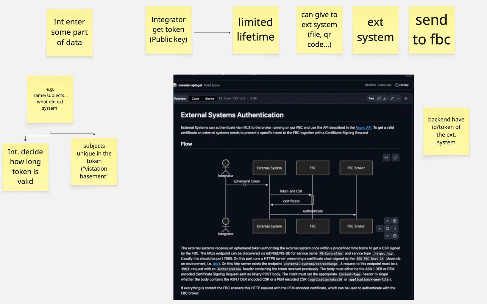
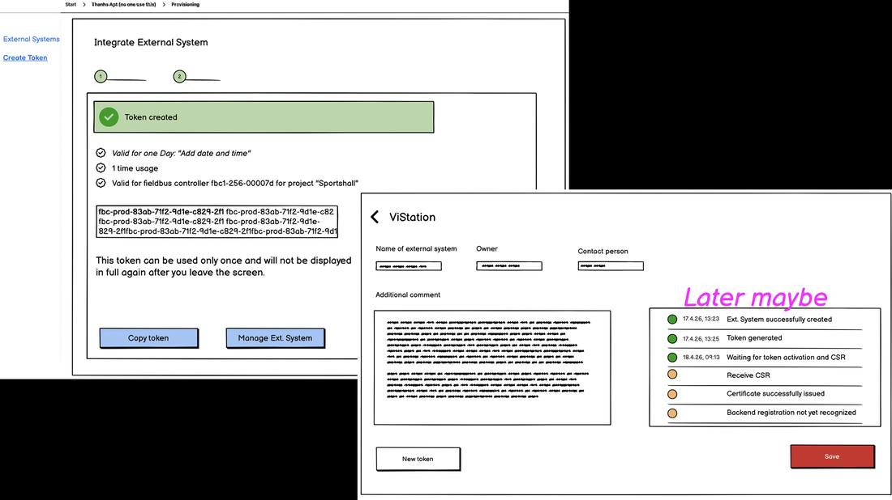
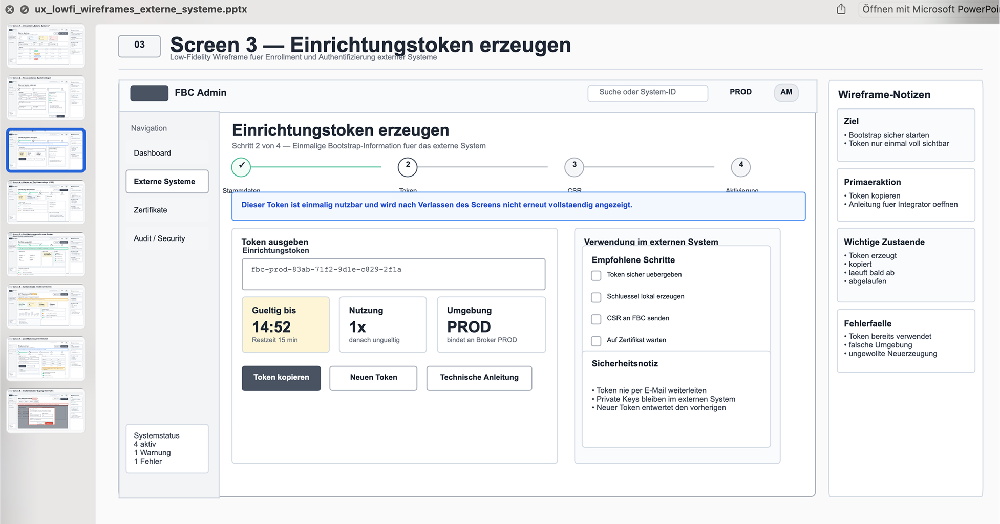

Externe Systeme integrieren
Kontext
Für das SaaS-Produkt zur Gebäudeautomation sollte ein Feature entwickelt werden, das die Integration externer Systeme ermöglicht. Start als UX Designer bei grandcentrix (Dienstleister), später Übergang zum Kunden, um das Produkt bis zur Marktreife weiterzuführen — zusätzlich als Delivery Manager in Elternzeit-Vertretung.
Ziel
Ein erstes Konzept, mit dem der User selbstständig und einfach ein externes System einrichten kann — unter Berücksichtigung von Security-Vorgaben. Im ersten Schritt zählten nur die Must-Have-Anforderungen.
Herausforderung
Die Anfrage kam spontan, mit der Bitte, bis zum nächsten Refinement in 2,5 Tagen einen ersten Lösungsvorschlag vorzulegen. Die Thematik rund um Security, Token und Certificate Signing Request war zudem nicht trivial — konkrete Anforderungen gab es kaum.
Discoveryphase


Im Gespräch mit den Entwicklern wurden die technischen Rahmenbedingungen geklärt. Beim Eindenken unterstützte eine KI, die vorab mit Produktkontext und der technik-affinen Persona (dem Systemintegrator) gefüttert wurde — sie simulierte einen User-Flow inklusive Hinweisen auf Fehlerzustände und technische Edge-Cases.
Lösungsphase


Der KI-Sparringpartner skizzierte mehr Use Cases als nötig, war über mehrere Screens hinweg inkonsistent und teils halluziniert. Mit eigenem Expertenwissen entstand in Balsamiq ein auf das Wesentliche reduzierter Clickdummy, der dem Team vorgestellt wurde. Aus dem Feedback entstanden die finalen Designs — dank KI-Einsatz und echtem Experten-Feedback konnte die Lösung innerhalb kürzester Zeit ins Backlog aufgenommen werden.